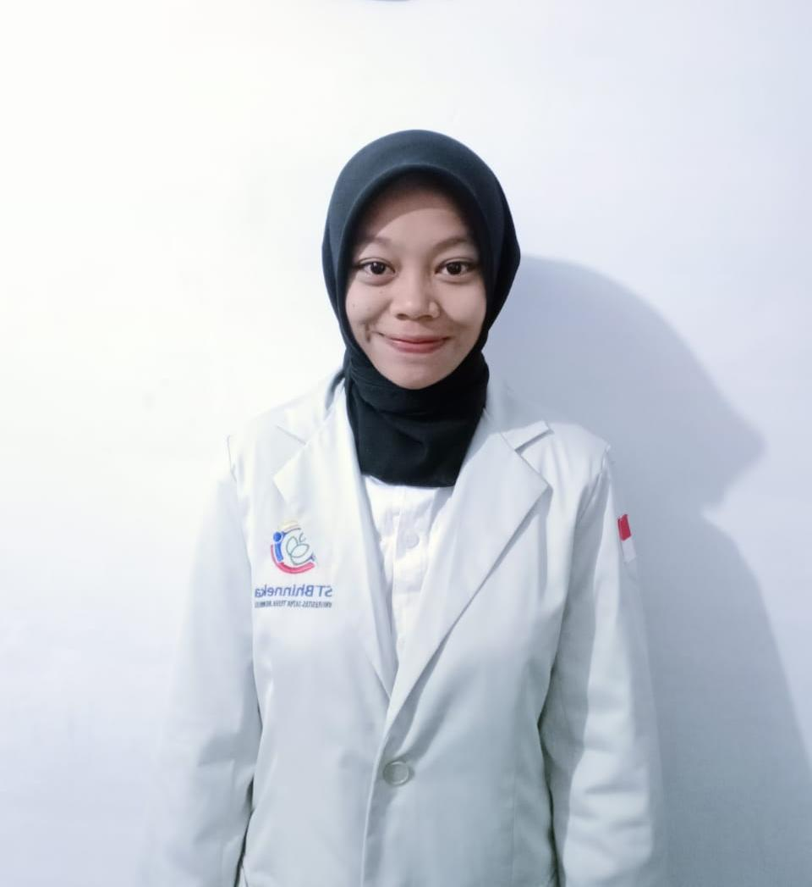

Website edukasi digital yang dikembangkan sebagai solusi atas kecemasan akademik mahasiswa dalam penggunaan kecerdasan buatan.
Website ini lahir dari penelitian tentang hubungan antara intensitas penggunaan AI dan kecemasan akademik mahasiswa.
Penelitian ini menemukan bahwa semakin tinggi intensitas penggunaan AI di kalangan mahasiswa, semakin tinggi pula tingkat kecemasan akademik baik kecemasan tentang kebenaran jawaban AI maupun kekhawatiran akan tergantikan AI di dunia kerja.
AICerdas hadir sebagai platform edukasi digital yang membantu mahasiswa memahami cara kerja AI, mengenali batasannya, dan menggunakannya secara bijak sehingga kecemasan berkurang dan produktivitas meningkat.
Meningkatkan literasi AI di kalangan mahasiswa dan mengurangi kecemasan akademik akibat penggunaan AI yang tidak tepat.
Mahasiswa aktif dari berbagai jurusan yang menggunakan AI dalam kegiatan akademik sehari-hari.
Dikembangkan berdasarkan survei kuantitatif menggunakan kuesioner skala Likert kepada 55 responden mahasiswa, dengan metode pengembangan Prototype.
Website ini merupakan bagian dari luaran penelitian ilmiah berikut:
Dibuat oleh mahasiswa Universitas Satya Terra Bhinneka dalam rangka tugas jurnal ilmiah mata kuliah Kecerdasan Buatan.
NIM: 2403310016
NIM: 2403310103

NIM: 2403310113
Semua fitur dirancang berdasarkan temuan penelitian tentang kecemasan akademik mahasiswa terhadap AI.
Penjelasan tentang cara kerja AI, fenomena hallucination, dan langkah verifikasi jawaban AI menjawab kecemasan tentang kebenaran informasi dari AI.
Konten edukatif tentang kemampuan unik manusia yang tidak bisa digantikan AI menjawab kecemasan mahasiswa tentang relevansi mereka di dunia kerja.
Panduan praktis 10 tips penggunaan AI yang sehat, cara membuat prompt efektif, serta Do's & Don'ts untuk mahasiswa.
10 pertanyaan interaktif untuk mengukur seberapa sehat pola penggunaan AI, lengkap dengan feedback per pertanyaan dan rekomendasi personal di akhir.